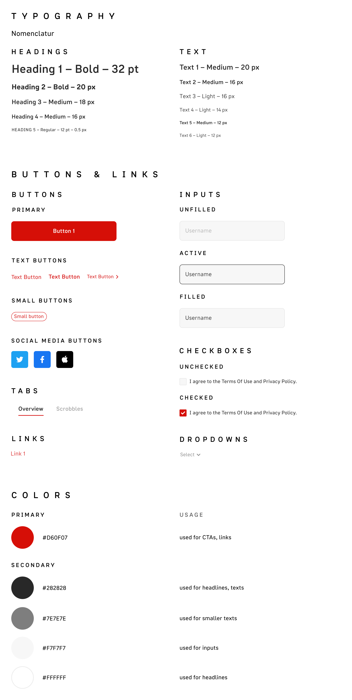

Problem Statement
The current Last.fm mobile application has limited features and often navigates the users to the website.
The users feel frustrated because they always have to open the browser to log in their accounts to delete their scrobbles, check out the pages of artists, songs, etc.
Solution
The upgraded design of the Last.fm mobile application has the same features that are only available on the website now.
Compared to the website, the redesigned mobile application is easier to use as it contains all the important functions that were missing while the interface got less complex.
Research
I wanted to learn about how the users use the current mobile application and find out how they feel about the difference between it and the website.
My research questions I was searching for participants with:
- Do they use Last.fm frequently?
- Do they use Last.fm for a long time?
- How do they use the current mobile application?
- How satisfied are they while using the current mobile application?
I interviewed users about what they use and what they like or dislike about the current mobile application.
My in-person semi-structured interview questions:
- Which services do you use to scrobble music? (Which services are the users comfortable with?)
- How do you decide what to listen to? (Where do they discover music?)
- Why did you get started using Last.fm? (What motivated them to sign up?)
- When was the last time you opened up Last.fm? (How often do the users use Last.fm?)
- Do you use the mobile application or the website more often? Why? (Do the users prefer the mobile application or the website of Last.fm?)
- How often do you check out the reports/statistics of your listening history? (How often do they use this feature?)
- Which timeframe do you check out the most often? (Which of the data from their listening history do they like to see?)
- Which section do you check out the most often? (Which of the data from their listening history do they like to see?)
- Besides checking out your scrobbles, do you use Last.fm for anything else (e.g. for discovering new music, checking out events, visiting the artists' pages, etc.)? (Which features do they use?)
- What do you like about the mobile application? (What is the strength of the mobile application?)
- What do you dislike about the mobile application? (What is the weakness of the mobile application?)
- If you were to add something to Last.fm, what will it be? (What are their wishes from the mobile application?)
After the user interviews, I expanded the research by sending out a survey. 69 users filled out my survey about what they use on Last.fm.
My survey questions:
- How long have you been using Last.fm?
- How often do you visit Last.fm?
- Which timeframe on your Last.fm profile do you check out the most often?
- Which section on your Last.fm profile do you check out the most often?
- Did you upgrade to Last.fm Pro?
- Besides scrobbling your tracks, which of the following features do you use on Last.fm?
- Do you use the Last.fm application on your mobile?
All the info given helped me to fix and improve the mobile application.
Analysis
After collecting information from the interviews and the survey, it was time to organize and analyze them.
From the interviews, I created an affinity map with quotes from the users and categorized them.
Concepts
Based on the user interviews and given the survey results as well, I wanted to find opportunities for future application features.
Similar to the affinity map, I categorized the remarks into themes to see what opportunities the new app can have and turned them into possible features.
After that, to see how important they are compared to each other, I put them into a coordinate system with X representing value while Y representing complexity.
By this graphic, it was easy to see which features are worth dealing with.
- Since the participants totally skip the index page with the recommendations on the website, the new index page is their scrobbles.
- The users can edit their scrobbles. (With high value and low complexity, it's the most important feature right now.)
- Recommendations are moved to another page. (With low value and low complexity, it's the least necessary feature right now.)
- The message function is entirely removed.
In the middle of the coordinate system, there is a feature which is new and we don't know how difficult and expensive it would be to implement it.
Sketch & Low-Fidelity Wireframe
I drew up my ideas on paper and then made a lo-fi wireframe in Figma.
First of all, I sketched eight ideas that first came to my mind. These were only components or a small part of my ideal application. Then I sketched a more detailed version which led me into create the low-fidelity wireframe.
Design System
I created a design system for the application.
The primary color is red which is the color of the brand. Simplicity and good readibility were my main concepts while redesigning the application, that's why I chose neutral colors from dark grey to white for secondary colors which balance red pretty well.
High-Fidelity Wireframe
Impact Overview
While designing the interface, I tested both the low-fidelity wireframe and high-fidelity prototype with three types of users.
My prototypes were tested by:
- People who never used Last.fm before
- Last.fm users who don't use the mobile application but use the website
- Last.fm users who have used/are currently using the Last.fm mobile application
New users found it easy and logical to use because it looks simple with good contrast. While website-only users had the same opinion, plus, they welcomed the solution to keep it similar to the website but in a upgraded version. The most of them would download it to their phones. Both website-only users and app users liked the idea of songs not having singles pages but going up in overlays.
My research didn't cover other options that could imply new features in the mobile application. One of these could be adding scrobbles manually. Vinyl sales have been increasing, so the user doesn't necessarily listen to music digitally anymore, therefore Last.fm doesn't fully represents the user's taste. During my user interviews, this case was just briefly discussed, but this could be the subject of a conversation in the future. Right now, we don't see how useful it could be for the users.
What I learned while redesigning this application is that the users are not happy when they can't handle their own data which belongs to them. The lack of functions led to frustration and dissatisfaction which could have hurt the brand if they weren't in a somewhat monopoly position.